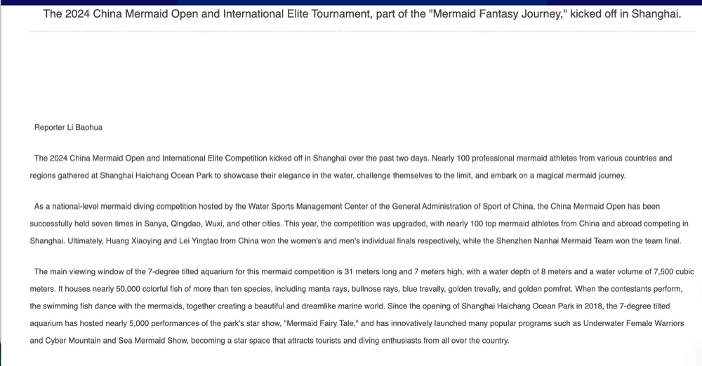
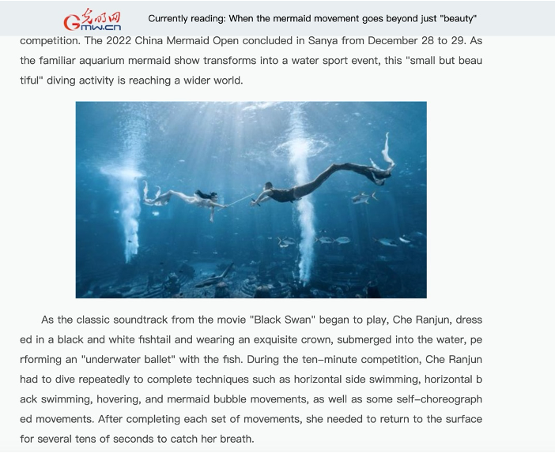
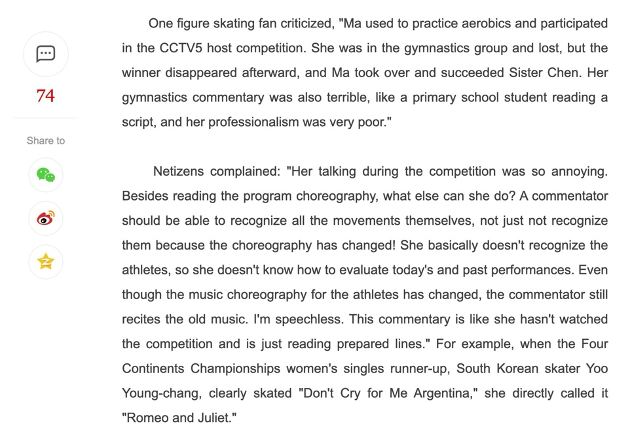
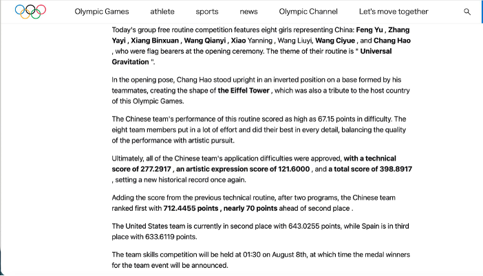
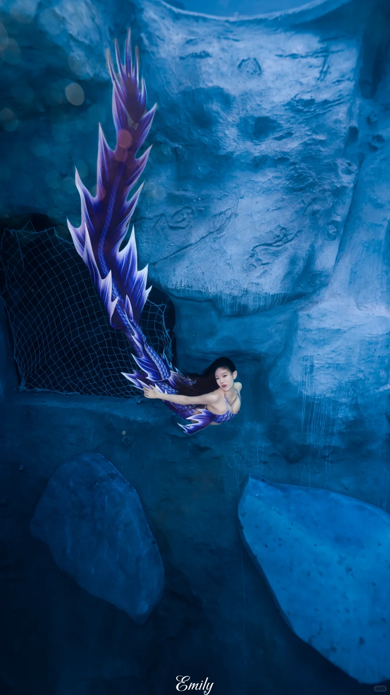
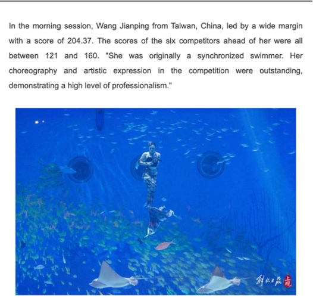
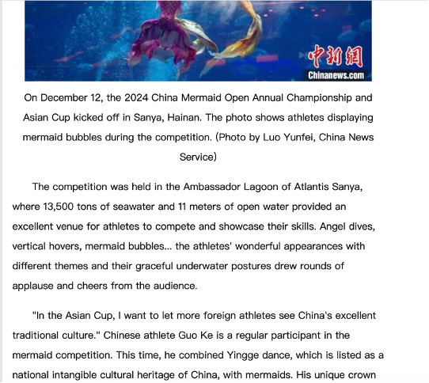
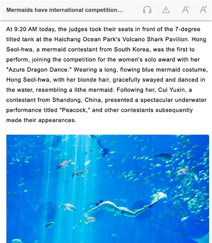

MERMAID
OPEN
For Producers · Camera Operators · On-Air Talent
Pressure Line covers sport the way it actually is — not the way it photographs.
We start with what the performance is trying to do — not what it looks like. Commentary names the work and explains the construction. Camera follows the athlete's structure. Editing serves the choreography. Everything else is secondary.

The China Mermaid Open is where we apply that standard. It runs more than ten legs a season, draws athletes from ten countries, and since 2025 has a dedicated art panel evaluating choreography, artistic expression, and cultural integration. The sport already knows how to read what athletes build. Current broadcast language often doesn't. Closing that gap is the reason this guide exists.
Sports broadcasting is, in rhetorical terms, epideictic discourse — the public language of praise and blame. Every commentary call, camera cut, and editorial decision tells the audience what to find praiseworthy in the performance they are watching. The China Mermaid Open's scoring system has already encoded an answer to that question: it praises completion, difficulty, expression, and choreographic construction. Current broadcast coverage praises something else — visual beauty, atmospheric spectacle, emotional affect. This guidebook identifies that mismatch as a rhetorical problem, not a stylistic one. Pressure Line reorients the broadcast's epideictic function around the values the rules themselves encode. The scoring dimensions are not just evaluation criteria. They are the rhetorical framework the sport has already written into its rules — and the framework this guide uses to organize every broadcast decision.
Current mermaid broadcast uses a recognizable and effective rhetorical strategy: pathos-first audience engagement. It leads with visual beauty, emotional atmosphere, and sensory immersion. This works — it creates an immediate connection between audience and event, and it lowers the barrier to entry for viewers who are new to the sport. The problem is not that it uses emotion. The problem is that emotion is installed as the only frame, before logos — the language of structure, argument, and evidence — ever gets a chance to operate.
Pressure Line does not discard that emotional connection. It redirects it. The goal is to move the audience's attention from the image to the work — from how the performance looks to what it is doing. That shift does not require less feeling. It requires giving the feeling something more specific to attach to: the choreographic argument, the breath-hold constraint, the scoring criterion that explains why one performance broke from the field. The three examples below show where current commentary installs the spectacle frame, and what it costs when that frame is the only one available.
Spectacle language is built into the event before the broadcast begins.
The 2024 Shanghai Haichang leg was officially named "Mermaid Fantasy Journey." That title is not one correspondent's word choice — it is the event's institutional identity. By the time commentary begins, the fantasy frame is already in place.

The 2024 Shanghai Haichang leg was officially titled "Mermaid Fantasy Journey" in government-affiliated reporting. Athletes were described as gathering to "embark on a magical mermaid journey." This is not one correspondent's word choice. This is the event's official identity.
"Journey" isn't neutral. It swaps a competition for an experience — and tells the audience, before anything starts, that feeling is the right response here, not judging. By the time commentary begins, the fantasy frame is already the water everyone is swimming in.
Broadcast repeats that frame by turning title into atmosphere.
At the 2022 Nanchang broadcast, the announcer names the work title — then pivots immediately to atmospheric language. That two-second window is where interpretation either begins or collapses. Here, it collapses.
At the 2022 Nanchang leg, the announcer names the work title — then immediately pivots to atmospheric language. No concept explained. No connection to the judging criteria. The title becomes a mood cue instead of an interpretive anchor.
Those two seconds are the most consequential decision in the broadcast. A work title names what the entire performance is organized around. When the announcer converts it into atmosphere instead, the audience gets a name for a work they'll never be given the tools to read.
A Xinhua-linked report on Che Ranjun's 2022 Sanya Grand Final opens: "underwater ballet with the fish." The headline had promised to go "beyond beauty." The lead sentence reinstalled beauty as the primary frame before the first paragraph ended. Sentence order is a statement of priority — and the spectacle default wins every time there isn't a system to interrupt it.

The audience is not the problem. The commentary standard is.
Chinese viewers of CCTV5 figure skating have already named this failure precisely: the commentator "doesn't know how to evaluate" performances. That expectation exists. Mermaid competition hasn't been held to it yet.
Viewer criticism of CCTV5 figure skating commentary named the failure precisely: the commentator "just reads prepared lines," "doesn't recognize the athletes," and therefore "doesn't know how to evaluate today's and past performances." This example isn't here to compare mermaid competition to figure skating. It's here to establish one thing: the audience expectation already exists. Chinese viewers of athletic-artistic sport already know what a serious commentary standard looks like, and they'll name its absence when they see it.

Mermaid competition hasn't received that standard yet — not because the audience isn't ready, but because the broadcast language hasn't met them at the level the sport deserves. A competition with four scoring dimensions, nearly fifty evaluated elements, and a dedicated art panel is not an aquarium show. The audience knows it. The coverage doesn't act like it.
Section I identified the problem: current coverage teaches the audience how to feel before it teaches them how to judge. Section II turns to the alternative. The scoring system already provides a language for reading this sport. It tells us what counts as completion, where difficulty actually sits, when expression is carrying meaning rather than mood, and whether choreography is building structure rather than simply passing through images. The examples below show what happens when broadcast starts using that language instead of defaulting back to spectacle.
This is not only an aesthetic preference. It is a rhetorical argument about what sport is. Rules, as rhetorical scholars have observed, are not simply evaluation mechanisms — they function as rhetorical devices that express what a sport values and define the terms under which performance is to be praised or blamed. The China Mermaid Open's four scoring dimensions encode a specific set of values: athletic completion under physiological constraint, calibrated difficulty, expressive meaning, and choreographic construction. These are the terms in which the sport's epideictic discourse — its public language of praise and blame — should operate. Current coverage praises athletes for visual beauty instead. Pressure Line praises them for what the rules recognize.
Before turning to mermaid competition, it matters to establish that this standard already exists in practice. Pressure Line isn't inventing a better standard. It's applying one that authored sport already uses — and that this sport's own community already applies in practice.

Theme named. Structure explained. Technical score (277.29) and artistic score (121.60) separated. This is not special treatment for an Olympic final. This is the minimum the scoring system deserves.
Two freediving coaches analyzing Yang Lu's 2024 Asian Cup performance in real time — naming movements by technical term, citing scoring criteria, specifying difficulty tiers. This standard already exists within the sport community. Pressure Line brings it to broadcast.
The scoring system does not simply produce results at the end of a routine. It structures attention all the way through. It tells the audience where to look for completion, where to locate difficulty, what expression is being asked to carry, and what kind of choreographic problem the athlete is trying to solve. In that sense, the score is not the beginning of explanation. It is the visible record of a reading process already built into the sport.
What Pressure Line changes is not just the explanation after the score appears. It changes what the audience is taught to notice from the start. A serious broadcast does not treat these criteria as judges' private information and then summarize results afterward. It uses them to organize the audience's attention in real time. The three cases below are not extra interpretations added from outside the sport. They show how the sport is already asking to be interpreted.

That tells the audience where the skill came from. It does not tell them what the panel actually found, or what to look for in anyone else's performance.
The creative choreography dimension is not rewarding polish in the abstract. It is rewarding internal logic. Do movements set something up and resolve it? Does the routine build phrases, or only display elements? The 45-point gap is not a generic sign of superiority. It is the panel's record of a structural quality the rest of the field was not building at the same level.

"Distinctive" is an impression. It tells the audience something unusual happened without naming what problem the athlete set for himself — or giving them any way to evaluate whether he solved it.
Guo Ke's 2024 Asian Cup Grand Final routine was built around the Yingge dance — a warrior percussion tradition from Guangdong, listed on China's national intangible cultural heritage register. The Yingge runs on three physical principles: weight (movements are grounded, gravity-driven, directed downward), percussion (rhythm comes from physical impact), and collective force (a warrior tradition choreographed for groups). All three are in direct structural tension with what underwater movement can do. A monofin generates horizontal propulsion. Buoyancy resists gravitational weight. Breath-hold eliminates percussive exertion. Solo competition removes the collective dimension. The creative choreography panel is evaluating one question: did the translation work?

The title is "Azure Dragon Dance." The coverage described her as a mermaid — the exact image she was working against.
In Chinese cultural symbolism, the dragon is the opposite of the mermaid — power over grace, force over flow. An athlete who names her routine after a dragon inside a mermaid competition is making an argument with her title. She's saying this performance will push against the competition's default aesthetic, not inside it. The art panel evaluates whether the choreography and expression deliver on that argument. Current coverage received the title, noted her hair color, and described her as a lithe mermaid — the exact figure the title was refusing. The broadcast didn't miss the work. It rewrote it.

These cases establish one point: the broadcast language this sport needs already exists. It is in the score, the title, the choreographic problem, and the criteria the panel is already applying. Current coverage treats those things as background, decoration, or result. Pressure Line treats them as the audience's reading frame. Once score becomes legible as structure, title becomes legible as claim, and choreography becomes legible as problem, the broadcast no longer has to fall back on atmosphere. Section III turns that reading system into routine practice.
"A score named without explanation is a fact.
A score explained is an argument."
These are not suggestions. They are Pressure Line's broadcast defaults. Section I identified the rhetorical strategy current coverage uses — pathos-first audience engagement, spectacle as epideictic proof, ethos built on visual access rather than analytical authority. Section II established the alternative: the scoring system's own criteria as the broadcast's reading frame. The standards below turn that framework into routine practice.
Commentary is epideictic discourse. Every call is an act of public praise or blame — it tells the audience what to find meaningful in the performance. Narrative structure is not decoration; it is the mechanism by which the audience follows an argument across time. A performance that lasts ten minutes and involves six descents has a structural arc. Commentary's job is to make that arc legible: establish the work's argument before the first descent, track how each sequence advances or complicates it, and resolve the narrative when the score explains what the construction achieved. These standards define how Pressure Line executes that function across commentary, camera, and editing.
A title is not a mood cue — it's the frame. If you haven't named the concept before the athlete enters the water, the audience has already lost it.
"Tail-up rotation" names it. "Ankle above the head at mid-descent, breath reserve at its lowest" explains what the athlete is actually managing. The audience can't read difficulty as achievement unless they understand what the difficulty is.
Background tells where capability came from. The scoring criterion explains what the panel actually found.
Continuous narration during a descent fills the space that belongs to the work. Watch, then interpret.
Recovery is preparation. Every descent should begin with a reading frame, not just a breath.
The wide shot makes depth and scale legible. Once it's done that job, returning to it is a spectacle decision.
This is the only position where labor, line, and structure are simultaneously readable.
Cutting to fish during a descent tells the audience the interesting thing is the environment, not the athlete.
A close-up is justified when expression is doing compositional work — when the art panel would score it.
A mid-sequence cut destroys the compositional argument the athlete has been building.
Synchronization is a scored criterion. A cut to one face during a synchronized sequence is editorially irresponsible.
Tank wide-shots, fish cutaways, crowd reactions during descents — these all tell the audience the interesting thing is the atmosphere, not the work.
Guo Ke asked whether a warrior tradition built on ground percussion and downward force could survive translation into breath-hold propulsion through water. Che Ranjun asked whether a piece built around the cost of perfection could hold tension across repeated descents without hearing the music. Hong Xuhua named her routine after a dragon and asked whether the performance could deliver on that claim. Wang Jianping brought phrase structure into a scoring context that had rarely seen it at that level.
What links these performances is not beauty, but authorship: each athlete set a problem, built a structure, and submitted that structure to judgment. Current coverage called the results beautiful. That is not false. It is simply a description of something else — what the performance looks like from the outside. Pressure Line broadcasts what the performance is doing on the inside.
The name carries three meanings at once: the physical pressure of depth, the physiological pressure of breath-hold, and the interpretive pressure every broadcast decision applies. Pressure Line means making every one of those decisions push in the same direction — toward reading.
The rulebook already knows how to read this sport. The broadcast has been lagging behind it. Pressure Line closes that gap.